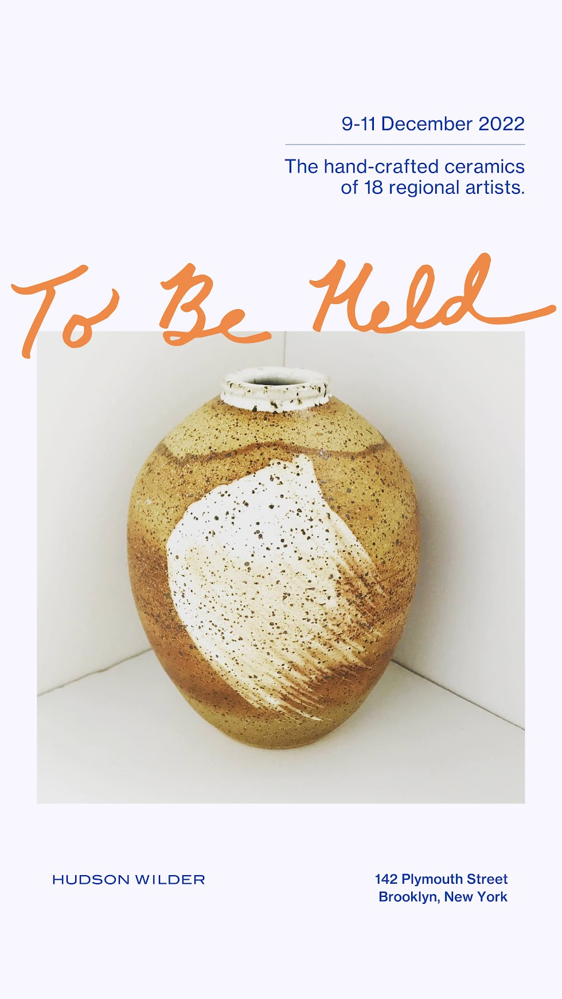
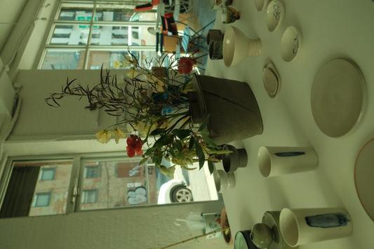
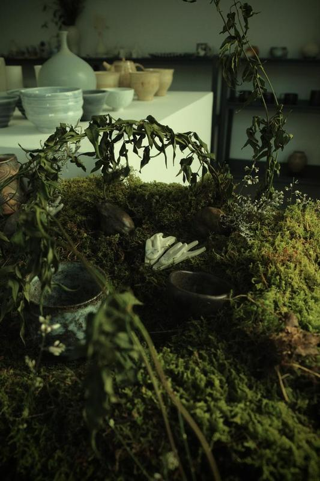
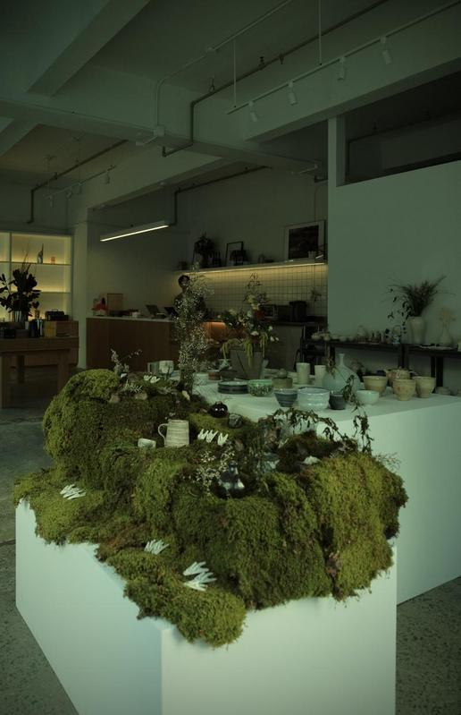

Organized by Kira Lauring and Kaitlin Gu, "To Be Held" showcased the functional wares of 18 Asian American ceramic artists 12/9 - 12/11 2022 at Hudson Wilder in Brooklyn NY.
To Be Held celebrated hand-crafted, unique pieces that are as beautiful as they are delightful to use.
Each piece in the show was thoughtfully shaped and trimmed, with functional and aesthetic charm and purpose.
Participating artists: Kira Lauring, Akira Satake, Audrey Le, Carole Aoki, Cheryl Chan, Dave Kim, Eric Kim, Esther Yang, Kae Linh, Lea Lee, Matte Chi, Meenah Kim, Seungmin Yi, Neil Chen, Philip Lai, Seean Kim, Tiffany Saw, Troy Yoshimoto.
Special thanks to Conway and Joyce Liao from Hudson Wilder and Cheryl Chan, Taylor Ward, and Kae Linh.
Photos by Cheryl Chan.



